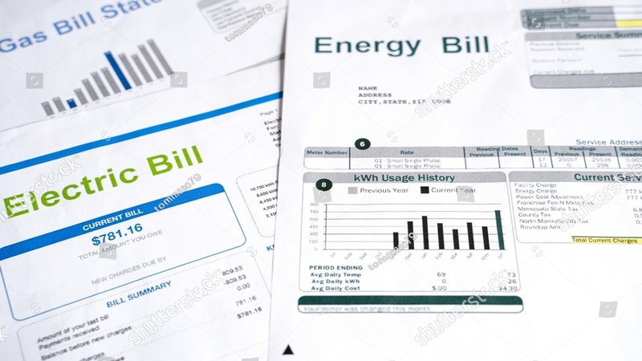

I got a call from a client named Marcus last month. He had just bought an electric car. A Chevy Bolt. He loved it. But his electric bill had gone up $60 in the first month of ownership. He was charging at home on a standard wall outlet. He asked me if he should install a Level 2 charger. He also heard about time‑of‑use rates. He didn’t know what to do.
I told him he wasn’t alone. Half of my clients with EVs have the same questions. How much does charging actually cost? Does a Level 2 charger save money? Should I switch to a special EV rate? The answers depend on your driving habits, your home’s electrical panel, and your utility’s rate structure.
Let me start with the basics. Level 1 charging uses a standard 120‑volt household outlet. It adds about 3‑5 miles of range per hour. A full charge for a Bolt with 250 miles of range takes about 60 hours. That’s fine if you drive 30‑40 miles per day and plug in every night. You’ll be fully charged by morning. Level 1 requires no installation. You just plug in. The charger came with your car.
Level 2 charging uses a 240‑volt outlet, like the one for a dryer or oven. It adds about 25‑30 miles of range per hour. A full charge takes 8‑10 hours. You need to install a 240‑volt circuit and a charging station. The hardware costs $300‑$700. Installation costs $500‑$2,000, depending on how far your panel is from your parking spot. Level 2 is faster and more efficient. Level 1 charging loses about 15% of energy to heat. Level 2 loses about 10%. So Level 2 is slightly more efficient.
Now, the cost of electricity. Marcus was paying $0.14 per kilowatt‑hour. His Bolt gets about 3.5 miles per kWh. So his cost per mile was $0.04. He drove 1,200 miles in the first month. That’s $48 of electricity. His bill went up $60 because he also used more home electricity for other things. But the car itself cost about $48. That’s way cheaper than gas. A gas car getting 25 miles per gallon at $3.50 per gallon costs $0.14 per mile. Marcus was saving $0.10 per mile, or $120 per month.
So the car saved him money even with the higher electric bill. But he wanted to save even more. That’s where time‑of‑use rates come in.
Solar ROI
Calculate solar system return on investment
All data stays in your browserMany utilities offer special EV rates. They give you a very low price per kWh during off‑peak hours, usually at night. In exchange, they charge a much higher price during on‑peak hours. For example, Xcel Energy in Colorado has an EV rate that charges $0.05 per kWh from 9 PM to 9 AM, and $0.27 per kWh from 9 AM to 9 PM. If you charge only at night, you save a lot. If you charge during the day, you pay a fortune.
Marcus switched to that rate. He set his Bolt to charge only between 9 PM and 9 AM. His cost per kWh for charging dropped from $0.14 to $0.05. That’s a 64% reduction. His monthly charging cost went from $48 to $17. That’s another $31 per month saved. He also shifted other loads to night time. His dishwasher, his clothes dryer, his water heater. He saved about $20 per month on those. Total savings: $50 per month. The TOU rate didn’t cost him anything to switch. It was just a phone call.
But TOU rates aren’t for everyone. If you work from home and run your AC during the day, the high on‑peak rate could cost you more than you save. You need to look at your whole usage pattern. Marcus had a small house, good insulation, and a programmable thermostat. He set his AC to 78 during the day and let it drop to 75 at night. That kept his daytime usage low. His bill went down $50.
I have a client named Linda who tried the same thing. She worked from home. She liked her house at 72 degrees. Her AC ran a lot during the day. Her on‑peak usage was high. Her bill went up $30 on the TOU rate. She switched back to the flat rate. For her, Level 1 charging on the flat rate was fine.
Now, what about Level 2? Does it save money? Not directly. Level 2 charging is slightly more efficient, but the efficiency gain is small. On 1,000 kWh of charging per year, Level 1 loses 150 kWh to heat. Level 2 loses 100 kWh. At $0.14 per kWh, the difference is $7 per year. That’s not enough to justify a $1,000 installation.
But Level 2 saves time. If you drive a lot, Level 1 may not be enough. Marcus drives 50 miles per day. Level 1 adds 40 miles overnight. That’s not enough. He needs Level 2 to fully charge. So for him, the benefit is not cost savings. It’s convenience. He can drive as much as he wants without worrying about range.
If you drive less than 40 miles per day, Level 1 is probably fine. Try it for a month. If you wake up with a full battery every day, you don’t need Level 2.
TOU Optimizer
Shift usage to cheaper hours and save
All data stays in your browserAnother consideration is the cost of installing Level 2. If your electrical panel is full or far from your garage, installation can be expensive. Marcus’s panel was in the basement, and his garage was detached. The electrician quoted $2,500 to run a new line. That’s a lot. He decided to stick with Level 1. He drives 40 miles per day. Level 1 added 45 miles overnight. He was fine.
If you need Level 2, look into utility rebates. Many utilities offer $500‑$1,000 to install an EV charger. Xcel gave Marcus $500. That dropped his out‑of‑pocket to $2,000. Still high, but better.
Now, let’s talk about the car’s settings. Most EVs let you set a charging schedule. You can tell the car to only charge between 9 PM and 9 AM. That’s essential for TOU rates. You can also set a maximum charge level. For daily driving, you only need 80% charge. Charging to 100% every night wears the battery faster. Set it to 80%.
Marcus set his to 80%. He also set the car to precondition the cabin while plugged in. That uses grid power instead of battery power to heat or cool the car before he leaves. That saves battery range.
Now, the big picture. Charging an EV at home is still much cheaper than gasoline. Even at $0.14 per kWh, Marcus was paying $0.04 per mile. Gas at $3.50 per gallon at 25 MPG is $0.14 per mile. He saved $0.10 per mile. That’s $100 per 1,000 miles. Over 15,000 miles a year, that’s $1,500. That’s real money.
If he can switch to a TOU rate and charge at $0.05 per kWh, his cost per mile drops to $0.014. That’s less than 2 cents per mile. Over 15,000 miles, that’s $210 per year in electricity. The same miles in a gas car would cost $2,100. That’s a $1,890 annual saving.
So yes, charging an EV is cheap. But you have to be smart about it. Use the right rate. Don’t overpay for Level 2 if you don’t need it. Shift your other loads to off‑peak hours.
I have a tool that helps with EV charging math.